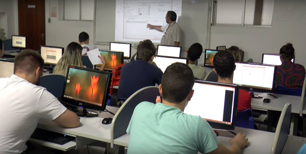

O mercado de trabalho para o profissional de Tecnologia da Informação (TI) vive em crescente expansão, por causa da popularização da Internet, do constante avanço tecnológico e da necessidade cada vez maior de informatização para manter a competitividade das empresas no mercado.
O curso de Sistemas de Informação da Unisanta tem por objetivo capacitar o aluno a trabalhar com o desenvolvimento de sistemas, visando desenvolver, implantar e gerenciar projetos nas áreas de Sistemas de TI.
curso de Sistemas de Informação, com aulas práticas desde o primeiro ano, trata a computação como uma atividade meio, visando à aplicação da computação na sociedade, através da organização e do uso da informação, o que propicia uma grande empregabilidade.
Os acadêmicos mantêm contato com a realidade do mercado de trabalho por meio de palestras, seminários e minicursos com empresas de tecnologia de ponta.
Mais de 90% dos acadêmicos dos últimos anos fazem estágio ou já trabalham no setor de TI , em grandes empresas da Baixada Santista e também da capital. Diversos ex-alunos atuam em outros países, como Alemanha, Estados Unidos, Canadá e Costa Rica.
Os diplomados estarão aptos a administrar redes de computadores, a montar e a gerenciar bancos de dados, a trabalhar com a segurança de dados e a elaborar jogos e sites na Internet, de forma profissional. Serão habilitados para exercer funções relacionadas à gestão dentro da TI, além de suporte aos usuários e a trabalhos de infraestrutura tecnológica.
| Duração | Formação |
|---|---|
| 8 Semestres | Bacharelado |
Deseja ficar sabendo da abertura de inscrições para ingresso no curso? Acesse este link.
Universidade Santa Cecília